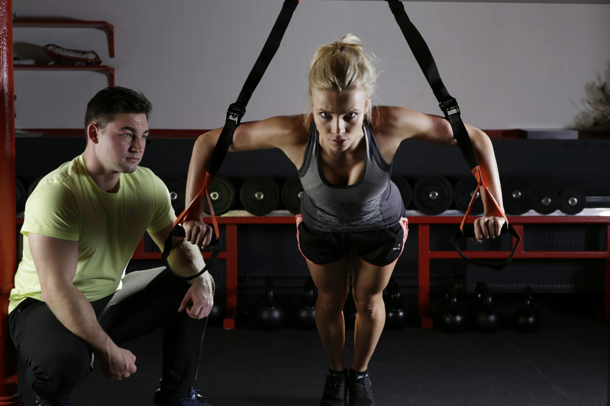

Free guide
7‑Day Kickstart Plan
Jump‑start your fitness journey with a balanced week of workouts and nutrition guidelines designed for busy people. Use this plan to reset and build momentum.
Weekly workout schedule
Monday – Cardio
30‑minute moderate‑intensity cardio such as brisk walking, cycling or jogging. Warm up for 5–10 minutes and aim to keep your heart rate at 50–70% of your maximum【415696358496398†L208-L210】【415696358496398†L263-L276】.
Tuesday – Lower body
Three sets of 10 reps of compound lower‑body lifts (squats, lunges, hip thrusts and deadlifts). Focus on form and gradually increase weight【255431109503615†L456-L520】.
Wednesday – Upper body & core
Three sets of 10 reps of push‑ups, dumbbell bench presses, bicep curls and lat pull‑downs, then finish with a 10–15‑minute core circuit【415696358496398†L321-L329】.
Thursday – Active rest
Light activity like walking or cycling for 30 minutes. Spend 5–10 minutes warming up and hold stretches for 30 seconds【415696358496398†L214-L219】【415696358496398†L242-L259】.
Friday – Lower body (glutes focus)
Repeat Tuesday’s session with a glute emphasis: Bulgarian split squats, leg presses, kettlebell swings, glute bridges and Romanian deadlifts【255431109503615†L504-L520】.
Saturday – Upper body
Push‑ups, dumbbell bench presses, bicycle crunches, leg lifts, bicep curls, lateral raises and chin‑ups. Perform three sets of 10 reps with light weights【255431109503615†L540-L566】.
Sunday – Rest
Take a full rest day. Go for an easy walk or do a gentle mobility routine to aid recovery.
Nutrition guidelines
- Eat at least 5 portions of a variety of fruits and vegetables every day【440441502418475†L45-L67】.
- Base meals on higher‑fibre starchy foods like potatoes, wholegrain bread, pasta or rice【440441502418475†L76-L90】.
- Include beans, pulses, fish, eggs or lean meat for protein and aim for two portions of fish per week with at least one oily fish【440441502418475†L98-L117】.
- Have some dairy or fortified alternatives such as semi‑skimmed milk or yoghurt, choosing lower‑fat and lower‑sugar options【440441502418475†L121-L137】.
- Use small amounts of unsaturated oils like olive or rapeseed; remember all fats are high in energy and should be consumed sparingly【440441502418475†L141-L154】.
- Limit foods high in fat, salt and sugar (cakes, biscuits, sugary drinks) – they’re not needed in your diet and should be eaten less often and in small amounts【440441502418475†L158-L173】.
- Drink 6–8 glasses of fluid daily; water, lower‑fat milk and sugar‑free drinks count; keep fruit juice or smoothies to 150 ml a day【440441502418475†L177-L194】.
Training & habit tips
- Warm up for 5–10 minutes before each workout and cool down afterwards【415696358496398†L182-L219】.
- Aim for at least 150 minutes of moderate‑intensity activity per week with two muscle‑strengthening sessions【415696358496398†L208-L210】.
- Use progressive overload: start with three sets of 10 reps and gradually add weight or reps as you get stronger【415696358496398†L223-L237】.
- Include flexibility exercises by holding stretches for 30 seconds on each side【415696358496398†L242-L259】.
- Take a 10‑minute walk after your biggest meal to support digestion and step count.
- Prep your breakfast the night before and keep a protein‑rich snack handy.
- Stick to a regular sleep schedule to aid recovery and energy levels.
Want a plan built around your life? Book your complimentary consultation on the landing page and we’ll tailor your next 12 weeks together.
Book your consultation